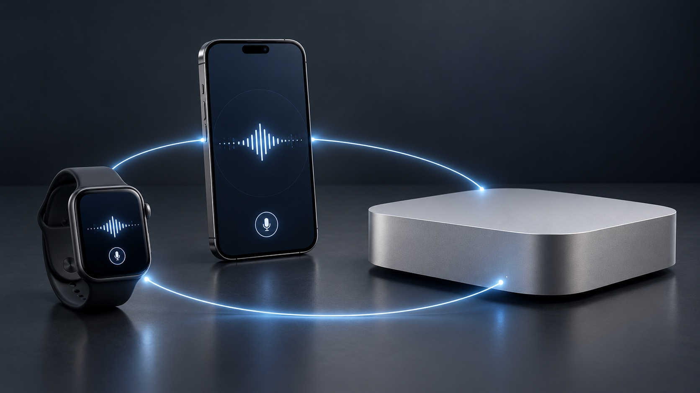
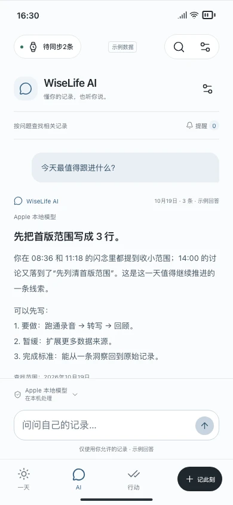

轻松捕获
轻点开始，继续生活。
让记录少一点打扰。
PERSONAL AI. PRIVACY FIRST.
你的数据，你的 AI，都在你的设备上。
为个人而生的端侧 AI，陪你记录、回顾与行动。

轻点开始，继续生活。
让记录少一点打扰。
保存记录，本地转写与分析。
把建议变成下一步。
在局域网内运行开放模型。
为复杂分析提供更多算力。
本地模式下，记录与 AI 处理留在你的设备。WiseLife 不接收你的个人记录。
查看设备与模型建议Series 4–12、SE 1–3、Ultra 1–4
App 要求 watchOS 10+。Series 4／5 和 SE 1 需使用 watchOS 10；Series 12／Ultra 4 需配对 iOS 27+。其余也须满足 Apple 配对要求。
Apple 配对兼容表 ↗iPhone 11 及后续系列、SE 2／3
App 要求 iOS 26+。Apple 本地生成模型另需 iPhone 15 Pro／Pro Max、16 及后续支持机型，并满足语言、地区与系统模型可用条件。普通 iPhone 15 不具备该模型资格。
Apple AI 适用条件 ↗Apple silicon · 建议 16GB 起
M1 或更新 M 系列的 MacBook Air／Pro、Mac mini、iMac、Mac Studio、Mac Pro，按实际内存选模型。Intel Mac 不列入推荐；Mac 伴侣尚未发布。
本地运行环境参考 ↗优先考虑个人问答、中文回顾与本地资源占用。以下为候选推荐，尚未完成 WiseLife 真机适配验证。
开启 JavaScript 可切换推荐；16GB 首选 Qwen3.5 4B，另可评估 Qwen3.5 9B、Gemma 4 E2B。
资料核对：2026-10-24。显示的是模型下载体积，运行时还需系统、缓存与上下文内存。建议单模型、4K 上下文起步，不保证最大上下文或运行速度。开放权重模型的许可各不相同；“可本地部署”不代表已接入 WiseLife。设备列表为系统兼容范围，非逐台实测。
CAPTURE → INSIGHT → ACTION
不必记住每个细节。让零散的声音与片段，
成为可以回看的记忆、可以追问的答案、可以执行的行动。
产品交互演示 · 示例数据 · 点击播放
一段长录音，一句闪念。想到就说，回头再整理。
回顾一天，或向 AI 提问。从原始记录找到答案。
确认一条建议，设好时间。待办、提醒与日程接着走。

走路时的灵感、会后的想法、下班路上的一句提醒。无需停下来打字，让记录融入生活。
“下次讨论之前，
把今天想到的方案画出来。”
在 Watch 上长按说话，松开保存。
轻点开始，再次轻点结束。回到 iPhone 整理。
录音由你主动开始与结束。“无感”指降低操作负担，不是后台自动监听。
试试 Watch 录音原型 ↗Ask AI 根据问题查找相关记录。把时间、人物与想法联系起来，
让每次回顾都有依据，让下一步更清晰。

“这周有哪些想法，值得继续做？”
你记下了“按人回顾”的产品想法，也提到希望在下次讨论前画出草图。可以先画出最关键的一屏，再带着它交流。
依据：你的主动闪念 · 示例让 AI 从录音和对话里提出行动建议。由你核对内容、补充时间，再加入行动清单。
把“想做”留在清单里，做完就勾选。
选一个合适的时间，到时提醒自己。
给重要的安排，留出开始和结束时间。
从一条闪念开始 · 示例
“开会前把草图画好。”
可选添加到 Apple 提醒事项或日历。
写入前由你选择并授权。
已有兼容 Apple Watch，就从它开始。
也可以选择 EurekaRing，把声音留在指间。


硬件不包含在 App 售价中。设备配对与具体功能需满足系统及固件要求。
YOUR LIFE. YOUR DATA. YOUR AI.
你不需要把人生上传到另一个平台，才能让 AI 帮上忙。
录音、文字与回顾保存在 iPhone。WiseLife 不提供个人记录云存储。
使用可用的 iPhone 本地模型，或选择自己的 AI 服务。Mac 本地服务正在规划中。
哪些信息交给 AI、是否接入外部服务，由你授权。你也可以删除自己的记录。
使用已下载且可用的本地模型，个人记录无需发送给 WiseLife 或外部 AI 服务。
本地模式不等于设备绝对无法被访问。设备安全、系统备份和你主动选择的共享由相应设置决定。了解隐私政策 ↗
App 一次购买，长期使用。
App 与 EurekaRing 众筹筹备中，开放后在这里获取。
US$9.99
首发优惠至 2026-12-31。各地区实际价格以 App Store 为准；硬件及外部 AI 服务费用另计。Mac 伴侣的获取方式将另行公布。
众筹计划中
价格、档位与交付时间将随众筹公布。
已有兼容 Apple Watch 或 EurekaRing？无需为使用 WiseLife 另购录音硬件。
可以从 iPhone 录音和管理笔记开始。Apple Watch 与 EurekaRing 提供更随手的入口，Mac 是规划中的可选算力扩展，不是使用 App 的前提。
录音由你主动开始与结束。无感指少操作、少打断生活，不是未经你操作自动监听。录制他人谈话时，请遵守当地规则并尊重对方意愿。
受支持的本地模型下载完成后可以离线使用。转写与总结的可用性取决于设备、模型、语言和地区；Apple 本地生成模型不可用时，不会自动把你的内容发送到云端。
两者条件不同。App 要求 iOS 26+；Apple 本地生成模型需要符合 Apple Intelligence 条件的机型，并满足地区、语言、系统与模型就绪状态。iPhone 15 Pro／Pro Max、16 及后续支持机型可进一步核对；中国大陆相关限制需以 Apple 当前说明为准。
Mac 伴侣尚在开发中。16GB 可作为轻量模型的评估起点，不代表任何模型都可运行。内存、模型量化、上下文长度与同时运行的应用都会影响体验。推荐表是部署候选，尚未经过 WiseLife 的整体验证。
iPhone 本地模式下在本机处理。规划中的 Mac 模式会把必要文字发到你授权的局域网 Mac。若主动选择外部 AI，相关文字会发送到你配置的服务；可选择记住授权。系统备份、Apple 提醒事项及日历同步由 Apple 设置管理。
AI 可以提出建议。你核对标题和时间后，才加入行动；写入 Apple 提醒事项或日历还需要你选择并授权。背景录音中的其他人说的话，也不直接视为你的承诺。
不包括。App 与 Ring 是不同产品；Ring 价格、众筹档位及交付安排尚未公布。本页目前没有开放购买或众筹付款，已有设备的用户无需再购硬件。